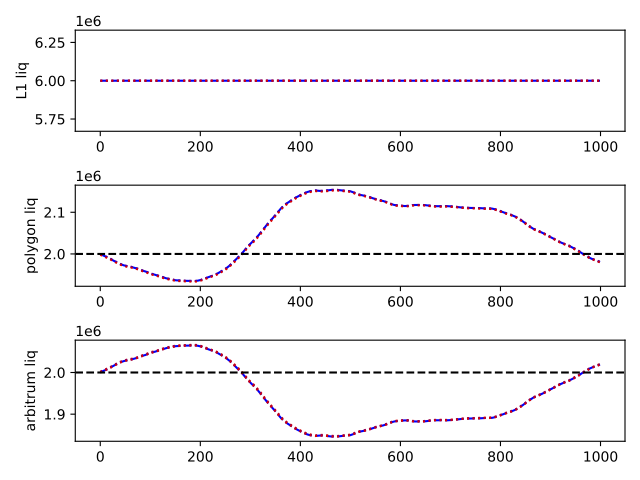

![Figure 14: Fee charged vs transfer amounts as percent of available liquidity in the origin vault. For example, if 10 wETH is transferred from a vault on Arbitrum with 1000 wETH it would show up at x=10%. The y-axis shows the fee charged for the transfer. For the PoC vaults were on the order of $100-200k at the beginning of the PoC. The exact numbers for each token (which in turn was distributed across multiple networks like Arbitrum and Polygon) are available here: TVLs for Mosaic (accessed November 12, 2021).](images/mosaic/poc_transfer_on_fee_curve.png)
A natural evolution in a cross-chain world entails developers and users interacting seamlessly with protocols, regardless of where their assets live. That is why our core mission at Composable Finance (Composable) [1], is to build a fully interoperable future, capable of offering developers and end-users a seamless experience and utility. Through simplifying and unifying decentralized finance (DeFi) [2] with new interoperability standards we are accelerating DeFi into the mainstream. We are crafting a transparent, interoperable future for DeFi 2.0 and Web3.
Similar to how Port Control Protocol [3] became an essential piece of the networking layer for the Internet, Composable’s vision is to become the entryway and networking fabric for blockchain networks. It is Composable’s mission to service all interactions, transfers, and communication cross-ecosystem. Our vision of hyper liquidity and composability abstract the underlying technology into a single interface, unlocking the potential for new primitives to be developed at an unprecedented pace. Protocol-to-protocol interactions will become possible across ecosystems.
The DeFi space has resorted to sharded blockchains for increased scalability [4], [5]. Examples are Ethereum 2.0 [6], Polkadot [7], and NEAR [8]. The result, however, is that even though the vision of ETH 2.0 is already upon us, instead of just blockchains being sharded, applications are being sharded as well. SushiSwap [9], for example, is deployed on multiple Ethereum Virtual Machine (EVM) [10] compatible chains, Layer-2-like (L2) rollups [11], and Parachains [12], and the expansion of these applications to other ecosystems is very likely. Thus, while moving assets intra-ecosystem is becoming more intuitive, with several applications segregated within a specific ecosystem, managing assets inter-ecosystem is not [13].
Therefore, Composable is focused on a cross-chain, cross-layer liquidity layer for sharded applications. Composable takes this notion a step further by also realizing that between each ecosystem, there is a sharding of functionality itself; for instance, most ecosystems have their own lending protocols. Our vision is thus to abstract away inter-ecosystem decision making and maximize users’ and developers’ outcomes based on their unique goals.
To accomplish this function, we are creating a communication protocol, utilizing our parachain as a finality layer, that will connect L2s to the Polkadot and Kusama ecosystem, and the Cosmos Ecosystem [14] through the Inter-Blockchain Communication protocol (IBC) [15] to the Polkadot and Kusama ecosystem. We will then include other ecosystems, such as Algorand [16], Solana [17], and more.
We are embarking on a vast and growing opportunity in architecting and building infrastructure that allow developers to deploy applications capable of interoperating across layers and chains autonomously. We believe that the applications of such a stack are the catalyst for the next DeFi revolution.
Let us start with Composable’s roadmap shown in fig. 1 covering tasks we target to complete through the first half of 2022.
In the closing of this year, we target to enable support for cross-layer NFTs, we deploy Phase II for Mosaic, we have Picasso onboarded to Kusama. The Picasso Token Generation Event (TGE) is planned to take place as well and our Oracle pallet Apollo is set to unlock primaries and secondaries. We are also set to release cubic - our pallet supporting vaults known from Ethereum but in the substrate-based Polkadot and Kusama ecosystems.
In 2022, we release Centauri, the IBS Substrate testnet, we finish our developments of the BEEFY light client, and develop our Parachain to L2 bridge capability. Later in that year, we finalize our routing layer and move Mosaic to Phase III which addresses decentralization. We also release our cross chain virtual machine and the IBC Substrate moves to mainnet. Each of these deliverables are covered in more detail throughout this paper.
Having covered the vision in sec. 1 and the roadmap in sec. 2.1, we now take a look at Composable’s tech stack in a top-down approach and specify in which sections throughout the Construction Paper one can find further information.
First, our Application Layer abstracts away high-level actions such as "take out a loan on chain W layer X, then stake that on chain Y layer Z”, in fact, we can get more abstract and say: "take out a loan at the lowest rate and buy NFT X” where “X” does not include any specification of the chain or layer it lives on. Much like the application Zoom, e.g., on a Mac can sync and communicate with Zoom on a PC via the internet. The user needs not understand anything about the details of how the internet works (besides how to connect in the first place), they are purely seeing the abstraction of complicated information transfers underneath, at this application layer. An application, however, in our case could be lending out money, taking a loan, committing capital to high-yield strategies, etc.
Let us descend one layer. We believe that the application needs to be developed in an easy to use language for developers which is blockchain agnostic. This can help bring to life the full network effect and speed of Web3. This is where the Cross-Chain Virtual Machine (XCVM) comes in, see sec. 3. In other words, XCVM is a virtual machine (akin to that familiar from Ethereum) capable of running smart contracts without the need to worry about the underlying chain-connection details. XCVM, in turn, needs to send information between various blockchains and layers. This is where the next layer down comes into focus: The Routing Layer, see sec. 4. This is how the encoded information from developers are turned into information being sent and received to and from the relevant parties. In other words, the Routing layer is responsible for routing the information from the XCVM to the correct blockchain and the correct layer, much like Port Control Protocol [3] from Web2.
To accomplish this, the Routing Layer, in turn, needs broad access to the ecosystem of blockchains. And it needs this access to be fast and secure. We have now arrived at our core layer: The Picasso Parachain for Kusama in sec. 5. Incidentally, a goal is to also deploy, in a similar way, to a Polkadot parachain. The parachain ensures security and speed as the applications transmit information around the entire ecosystem.
Taking a look now at the various existing ecosystems, for Ethereum we built Mosaic, covered in sec. 6. Mosaic is a cross-layer bridge and allows for easy cross-layer transfers of tokens. Mosaic is actively being built to support cross-chain transfers as well - via Picasso. To achieve our vision for Mosaic we broke down the development into three distinct phases which we will highlight here. In Mosaic’s Phase I, sec. 6.1 aka the proof-of-concept (PoC), assets can be locked on the source layer, a relayer transmits the transferal information to the destination layer and the same amount in fees is released on the destination layer. In Mosaic’s Phase II, sec. 6.2 , we now connect multiple layers and provide multiple ways to provide liquidity on both L1 and L2. We build a software environment, sec. 6.4, to help us decide on liquidity rebalancing and an optimal fee model to use, sec. 6.4.2. In Mosaic’s Phase III, sec. 6.3 we seek to increase as much as possible the decentralization of the entire system.
Next, besides Ethereum, we are also actively developing in the Polkadot and Cosmos ecosystems [14]. For Polkadot, we are creating a blockchain in Substrate [18] and for Cosmos we are contributing to the Cosmos SDK. Then, pallets [19] are used to add additional functionality - one example is our Maximal Extractable Value (MEV) [20] resistant data oracle Apollo [21]. Other pallets can be developed including ones to enable Solidity support, cross-chain message capabilities (XCMP), decentralized exchanges, and so on. Cosmos supports the Inter-Blockchain Communication Protocol (IBC) [15] standard opening up for a large ecosystem that we can connect to.
In the remaining sections, we cover each of these layers in more detail and we conclude at the end in sec. 7.
The cross-chain virtual machine (XCVM) is a single, developer friendly interface to interact and orchestrate smart contract functions across the multitude of L1 and L2 networks available. In short, the XCVM abstracts complexity from the process of having to send instructions to the routing layer directly, initiates call-backs into smart contracts, and handles circuit failure such as network outages.
Build on top of our bridging infrastructure, our tools for the Composable Cross-Chain Virtual Machine allow developers to tap into various functions of communication and liquidity availability. The result is multifaceted; users can perform cross-chain actions, and the overarching blockchain ecosystem is repositioned as a network of agnostic liquidity and available yield.
Composable allows developers to tailor their experience to maximize for a desired parameter while minimizing ecosystem-specific decision making.
The virtual machine is, first and foremost, and abstract definition of how services should assume that cross-layer transfers and functionality operates, including security, finality, fee model and availability. The security and finality are dependent on the bridging technology used, and relatively static (although we will see that the security for optimistic bridges is a function of network participants and economic stake). Fees are highly dynamic, dependent on network traffic. Availability describes the existence of appropriate relayers, and even the existence of the destination chain. Although many systems are not designed to take into account deprecation of a blockchain, any truly resilient and scalable bridging technology must handle that failure mode.
We distinguish between two categories of bridges: optimistic and final. Mosaic is an example of an optimistic bridging technology, using decentralized relayers, economic incentives and dispute resolution to secure a network. IBC and XCM are both final, and require that the destination chain has a light client embedded, as well as deterministic finality. Tendermint, GRANDPA and BEEFY provide deterministic finality, while proof of work based chains can only be bridged using optimistic solutions, although these solutions are highly secure in the case of Bitcoin.
Smart-contracts usually assume two modes of result, success or failure, but are ill-equipped to handle partial success. Even relatively simple layer-to-layer operations may reach an indefinite state, where contracts state or funds are left in limbo. Instead of massively rewriting existing smart-contracts and protocols to handle the multitude of failure modes, the XCVM transparently handles state transitions, disputes and reverts. It combines different bridging protocols, such as IBC, XCMP and Mosaic Phase 3, and is capable of integrating new bridging technologies. Rather than modeling a cross-chain transfer (XCT) as a single operation, such as locking funds in a local contract, we model it as a set of reversible state transitions with different approximate costs for each transition. The VM exposes the lower level APIs to directly query and interact with the current state, as well as a higher level interface, that observes the complete set as a single, fallible operation. Sets may be combined into larger operations, allowing to roll-back the entire transaction.
By modeling XCTs as a state machine, or more accurately a directed, cyclic, weighted graph, we naturally arrive at the actual requirements of the XCVM: any blockchain that is capable of executing a transition within the XCT is XCVM compatible. Completely trustless compatibility can be achieved through the use of smart-contracts and runtime-embedded light clients, such as IBC. For chains without smart-contract capabilities or light clients, such as Bitcoin, we can employ optimistic bridging and message passing technologies, such as our Mosaic project.
The XCVM offers Picasso based dapps different hooks and updates on the status of any XCT, as well as RBAC based flow control for actively managing the execution of different stages. Dapps incur transaction fees for calling into this underlying execution layer. Depending on the stage of the XCT, this fee may be subtracted from the XCTs payload in case of a simple token transfer using our bring-your-own-gas features.
Optimistic bridges are secured through a dispute resolution system, where relayers use a stake to provide for settlements in case of fraud. Properly securing an XCT requires knowledge of the value of the XCT. For token transfers, a pricing oracle may provide an estimate of the absolute stake required for a safe collaterization ratio. We can extend this security model to decentralized finance products by providing on-chain models of common protocols. Oracles then provide time-weighted prices and reserves, and locally we can compute the necessary collaterization to secure a sequence of DeFi operations within an XCT. Using well-known protocol types (WKPT), we can also define how to reverse an XCT, as well as locally check the validity.
WKTPs are identified by their contract hash (for smart-contract based protocols), Call definition (for XCM compatible chains) or module version (for IBC chains). Only WKTPs used by a specific XCT incur a runtime cost. The storage cost per WKTP ranges from a few kilo bytes to hundreds, meaning that the protocol can scale to millions of WKTPs on modern hardware. Depending on different factors, WKTPs could be effectively scaled using zero-knowledge technologies, requiring only the identifier and oracle data to be stored on-chain.
Composable dapp developers may choose to create XCTs tied to specific identifiers, or a more general, interface based approach. The identifier approach has better security guarantees, but loses flexibility in the presence of upgradable contracts. This distinction is necessary, as an upgradable contract is able to arbitrarily change semantics, while binding the XCT to a specific contract hash. Not all upgradable contracts can be uniquely identified, as keeping track of a chain of logic delegations within upgradable contracts is prohibitively expensive. In that case XCT authors may only use the interface based approach.
Routing transactions between different blockchains remains a difficult problem. Natively, blockchains have no concept of networking, DNS or other temporal data; and storing these on-chain is both prohibitively expensive, as well as a bad idea, as temporary network outages must not cause consensus failure. To accommodate for the limitations of blockchains, we are developing a network of decentralized nodes to provide oracle and relaying services, based on crypto-economic security primitives and threshold-signature-sharing. Staking and fee incentives secure the network and ensure longevity. By cleverly combining these services, we are capable of executing protocol-to-protocol interactions across chains. In the cross-chain, cross-layer scenario we operate, it is crucial to find the best route to exploit. A good route can reduce the time of transactions, the associated costs and minimize the risks taken by the user. Hence, the routing layer design directly affects the quality of our service and the user experience.
Our routing layer solves two problems: constructing and maintaining a graph of the different chains and bridges available, and, finding the best route at a given time. With the increasing number of chains (both on Layer 1 and Layer 2), and the different available bridge solutions between them, maintaining a live graph of all the connections is not a trivial task. In a dense graph, the number of edges connecting the vertices grows quadratically. We also need to consider the mutating and changing nature of blockchain ecosystems: new versions of protocols can be deployed, old bridges might drop support, new tokens can be added etc.
Given the magnitude and dynamic essence of the task, and the volatile prices we face, finding the optimal route for a given trade is not in the reach of most of the users. The problem can be seen as an instance of the Travelling salesman problem [22] or the Minimum-cost flow problem [23], with the component of changing networks and the requirement of on-chain validity. The users need to be guaranteed they got the best possible path. In order to accomplish all this, we require complex algorithms (e.g: [24]) and dedicated heuristics.
One exciting application for this execution layer is in cross-chain fee management. Our infrastructure as a whole intends to support a network of blockchain networks, meaning that there will be multiple potential pathways to the same destination. In this scenario, without a tool to do so for them, users would have to pathfind the most efficient and compliant route for value packets. Users may need to prioritize efficiency if the pathway must be especially liquid or secure, or if a specific regulatory requirement must be enforced (such as know your customer/anti-money laundering requirements, abbreviated KYC/AML). Therefore, the routing process would be both incredibly important and very time intensive. Our pathway execution layer will make this process simple for users and enable them to customize which parameter they want to optimize for when completing a given transaction.
Our routing layer will abstract and simplify the route algorithms through a clean and straightforward interface. In an effort to decentralize our solution and increase the transparency of DeFi projects, we also plan to include the following services and parties within our solution.
A nameservice is a simple registry that maps identifications to names (e.g: DNS). This feature can also be used to link blockchain addresses to names (e.g: nicknames). Nameservices improve the semantic meaning of decentralized protocols, help the inexperienced user, bridge different platforms, decrease the possibility of making errors when creating transactions and contribute to promote identity and digital ownership on Web3.
While other projects have already explored the benefits of using nameservices [25]. To the best of our knowledge, Composable Finance will be the first one to provide cross-chain and cross-layer nameservice support. Providing nameservice support on a single chain is relatively trivial. However, maintaining nameservices across different layers and chains poses new challenges. We will take care of the details such as key management, data synchronization and finality on different chains so that the whole process is translucent to the final user. Therefore, no matter the network or the token, we will be able to support names and addresses indistinctly.
Nameservices help to accomplish our vision of a less fragmented and more accessible blockchain space. Where a single interface helps to leverage the composability of the DeFi space, unlocking its full potential and enabling new projects.
As mentioned beforehand, constructing a dynamic graph and finding the best route within it, are the main challenges our routing layer faces. In achieving these goals, we also want to ensure the decentralization and auditability of the solution. For this reason, we introduce two parties, which can be run by anyone, that will have a crucial role on the protocol:
Indexers will act as oracles and will help to update the graph of interconnected chains and bridges. Every time there is a change on the topology of the network (new bridges/chains, network disruptions, significant changes on costs, etc.), indexers will notify it. Indexers notifications will be weighted and taken into account to update the main graph. Indexers will obtain rewards in rewards in function of the utility of the updates and a slashing mechanism will be used to prevent malicious indexers.
Solvers will run off-chain custom algorithms to find the best route for a given problem instance. When trying to find a path, solvers will compete to find the best solution. Received solutions will be ranked according to a predefined cost function and top solvers will earn tokens with regard to the efficiency of their solution. By doing this, we leverage the game theory aspect of the competition while achieving a decentralized manner to find the best route.
These roles will be used, together with a default minimum cost routing algorithm, to address the routing challenges previously introduced. This architecture, as shown in fig. 2, enhances for public examination and minimizes the trust users need to put on the protocol. It is also fairly easy to scale since most of the workload is performed off-chain, while only validation is done on-chain.
As for the routing algorithms employed by solvers, we do not enforce any kind of restriction. We are interested on the best result the community can provide. As previously mentioned, and shown in fig. 3, we are facing a complex problem with variable parameters, where there is no unique strategy that dominates the others, at least with limited time. We outsource the path finding task to the decentralized community of Composable users. As other projects have explored [26], having the users to run different algorithms and heuristics in a fair ecnonomic game, produces a better and more complete solution that can adapt to new scenenarios faster. We will also run our own algorithm, so that all problem instances have a fair baseline solution.
Composable’s vision is to create a protocol that allows for communication across ecosystems. The result is a Port Control Protocol like system for blockchains. The end result is multifaceted; users can perform cross-chain actions, and the overarching blockchain ecosystem is re-positioned as a network of agnostic liquidity and available yield. Throughout these interactions, Composable allows users to tailor their experience to maximize for a desired scalar, such as security or speed, while minimizing ecosystem-specific decision making.
Foundational to our approach of expanding on existing, cutting-edge technology is our effort on stabilizing BEEFY and leading the charge on the Cosmos-Substrate bridging infrastructure. We are developing the reference implementation for BEEFY in Golang, as well as the BEEFY-IBC client libraries needed to support connections to Cosmos chains. Only the security of a parachain allows for bridging to both XCM and IBC compatible chains.
At the core of our communication stack lies the parachain, functioning as a finality layer for IBC compatible chains, as well as a gateway into XCM compatible chains. It functions as the incentivization layer for light client data storage and proving.
We will be pursuing the operation of both a Kusama and Polkadot parachain. Projects that do well on the Kusama chain, can then upgrade to our Polkadot parachain - still to be named.
Polkadot and Kusama also allow for native cross-chain communication with all other parachains connected to the relay chain, as well as all external networks. An inflationary reward mechanism is used to incentivize collators and oracles. Through a runtime upgrade enacted by decentralized governance, the actual reward rate can be set and reduced as the protocol starts generating significant fees. Users and infrastructure providers are capable of staking PICA and LAYR tokens to grow with the ecosystem, providing critical security and capabilities to our ecosystem.
We consider Kusama and Polkadot interchangeable in what follows and part of the greater substrate ecosystem. Polkadot offers plug-and-play security, allowing Composable to focus on building its ecosystem, and leaving the security to Polkadot’s validators. By leveraging parachains we do not have to recruit our own validators for security, which gives us greater finality guarantees and lowers the risk of cross-chain transaction failures. We also chose Polkadot for its blockchain development framework, Substrate. Substrate allowed us to custom-build our blockchain, allowing us to continuously upgrade our blockchain with new functionalities without needing to fork the network. Polkadot also allows for native cross-chain communication with all other parachains connected to Polkadot, as well as all external networks bridged to Polkadot. Last, we believe Polkadot has the top engineering team and leadership in the industry, having been built by Gavin Wood who coded Ethereum, invented the Solidity programming language, and invented the Ethereum Virtual Machine (EVM). We believe Polkadot is building the third phase of crypto after Bitcoin and Ethereum.
Composable’s support of different ecosystems implies that we must be able to control and abstract for the final user, the inclusion of transactions in different chains. Inclusion is tightly related to the concept of finality. Finality guarantees that past events on the blockchain are immutable, therefore when a transaction it is included on a final block we can be sure that it has been included on the chain. Unfortunately, strong finality cannot be provided without some compromises [27] and most blockchains only offer some degree of finality. We list the three degrees of finality most likely to be found on different networks, from weaker to stronger finality:
Probabilistic finality: Finality is reached eventually. Under some assumptions, we can estimate the probability that a given block is considered final. With each new block added to the chain, older blocks become more final. E.g: Bitcoin and most PoW chains consider a block final after 6 blocks since the probability of a fork decreases exponentially as the chain grows.
Provable finality: In an effort to provide stronger and faster finality, some chains include some kind of finality gadget that runs in parallel to the chain and performs come Byzantine agreement process over the blocks. Once the gadget has gone over those blocks and a consensus is reached, they are considered final. E.g: GRANDPA on Polkadot and Casper FFG on Ethereum.
Absolute finality: At a cost, some blockchains implement Probabilistic Byzantine Fault Tolerant (PBFT) consensus protocols. This means, once the block is crafted, it is automatically considered final (e.g: Tendermint).
We need to handle chains with different finalities and different synchronization times. Therefore, we cannot proceed with a deterministic solution. In order to make Composable decentralized and protocol-agnostic, we need to rely on validators.
Given that our parachains are the foundational layer that powers our ecosystem, we have adopted a pallet-centric approach to adding products on our parachains. Meaning, we will offer projects the ability to deploy as pallets on our chain, with decentralized, stake-based governance, having the ability to upgrade these pallets into the runtime of our chains. We are excited to be able to offer this to the Kusama ecosystem, and have a grants programs for others to develop pallet projects using our technology, to be implemented into our parachain. Projects that do well on the Kusama chain, can then upgrade to our Polkadot parachain, which we envision to be the stable, more mature sister of our Kusama chain.
Although we intent for untrusted sources to also perform protocol-to-protocol interactions on our parachains, through the web assembly-based XCVM, we initially focus on projects deploying as pallets, which allows these projects more granular, lower level access to our cross-chain APIs, as well as more advanced logic related to the block life-cycle, storage and cryptographic primitives. We are strong believers in security through tooling and support the move within the DeFi ecosystem towards Rust and web assembly as tools and computing platforms.
Mosaic is an optimistic bridging solution based on advanced liquidity management, singe sided liquidity pools and a relayer network. At its core it consists of a network of bridges, operated by relayers interacting with smart contracts on source and destination chains. Our proof-of-concept relayer solution is based on a trusted setup, that monitors all connected chains for events, and enacts the transfers accordingly. The next release improves on this model by decentralizing the relayer, using different cutting-edge technologies such as Threshold-Secret-Sharing (TSS) and transaction batching using merkle-proofs.
The liquidity layer serves to ensure liquidity is moving to the locations where it is needed, allowing the propagation of whatever instructions are required to satisfy the user’s desired outcome, as specified above. We are currently testing this capacity within the EVM ecosystem by running our Proof of Concept (PoC) of Mosaic. From there, we can generalize this liquidity problem and solution to other ecosystems. Liquidity concerns are not new in DeFi. However, they have largely been resolved by automated market makers (AMMs) built into the popular DeFi exchanges like UniSwap and Sushiswap. The introduction of cross-layer and cross-chain applications is, however, making liquidity a more pressing issue than ever before; with so many different layer 2 applications and blockchains to balance liquidity across, and so little infrastructure to do so, liquidity is too siloed for interoperable applications to generate meaningful value.
Phase I presents a simple and functional cross-layer solution to enable a transfer system between all major DeFi ecosystems. It is a PoC with enforced limited functionality to demonstrate the capability of the system.
The main actors in this phase are: an L1 vault in charge of redistributing liquidity, dedicated vaults on each L2, users engaging and providing the required liquidity and a relayer in charge of communicating the different supported networks. All the actors and their interactions are depicted in fig. 4.
As you can see on fig. 4, a transfer consists of 2 important events: the lock event that happens on the source layer and the release event that is triggered by our relayer system on the destination one. This interaction is done on the L2Vault contract, with the lock happening using the depositERC20 method, while for the asset release, the withdrawTo method is called on the L2Vault contract deployed on the other side.
In terms of the necessary liquidity for these actions to happen, users deposit liquidity using the VaultL1 smart contract deployed on L1 mainnet. Users obtain rewards in form of LAYR tokens in exchange for providing liquidity. L1 Vault acts as master with regards the L2 vaults, and redistributes the liquidity on demand.
By leveraging a lock/unlock pattern on phase I, we were able to proof that interoperability can be obtained in the DeFi space, and that a single curated interface is enough for the user to operate on different layers and chains. We also obtained data about the user experience and liquidity demands on different networks. Nevertheless, we kept the functionality limited for testing purposes. Thus, we dedicate next phase to enhance and open the protocol to more complex features.
Phase II represents the evolution of Mosaic v1, our proof of concept. Phase II introduces two main components: a new active/passive liquidity model and a new and more complete set of features that deeply extend the functionality of Mosaic. Phase 2 allows using different tokens on the source and destination layers, and also introduces the support for new chains such as Moonriver, Fantom, and Avalanche.
In Mosaic v2 the user has the ability to provide liquidity on any layer and in exchange, besides the APY, he receives receipt tokens that can be integrated with other protocols (e.g: use them as collateral for loans). The user is also able to withdraw liquidity at any point he desires, our dynamic withdrawal fee will calculate the proportional rewards and the user will be credited with the right amount of tokens. Liquidity ca be also directly provided using ETH, and ETH can be transferred among the different layers. In addition to all these new possibilities, we introduce two types of liquidity for different profiles:
Passive liquidity: In this type of liquidity providing, a more conservative user can obtain some rewards by providing liquidity in his desired layer. It can be understood as staking assets to yield some farm. On the withdrawal, the user obtains the rewards and recovers the initial liquidity. Passive liquidity can only be withdrawn in the same token it was deposited.
Active liquidity: This liquidity providing model is intended for more knowledgeable and active users with an elevated risk appetite. By leveraging Composable SDK, they can run a dedicated bot to monitor the mempool and the liquidity requirements of the transactions. If the liquidity of the destination layer is not enough, users can frontrun those transactions in order to gain greater rewards. Active liquidity is specified in number of blocks, and automatically becomes passive liquidity after that time. Active liquidity requires a flowing management but allows users to benefit from unbalanced networks to gain additional yield. Active liquidity can also be withdrawn in any token from any network.
Mosaic v2 not only supports value transfers, but also offers cross functions calls. The relayer can transfer the function call and its associated parameters from source to destination in a similar manner as value transfers. To handle calls and returns, it employs a MsgSender contract on the source layer, which is in charge of abstracting the user and communicating with the relayer, and a MsgReceiverFactory contract on the destination layer. MsgReceiverFactory creates MsgReceiver instances, which create a virtual identification of the user on the destination network, and interact with the desired protocol. All the interactions on the destination layer are done through the factory contract.
This general architecture, as shown on fig. 5, allows users to call any protocol on any network and from any source. This elevates Mosaic v2 to a new level of unification, not only value is transferred, but also functionality is bridged together.
In addition to the improvements already mentioned, phase II of the protocol presents the following and varied advances:
Phase I was about proving a concept and demonstrating that a less fragmented DeFi space was possible. Phase II was about enhancing and increasing the features of Mosaic as well as adding new liquidity models. Phase III is focused on increasing the decentralization of our solution.
Mosaic’s core consists on a network of bridges, operated by relayers interacting with smart contracts on source and destination chain. Phase I and II are based on a trusted relayer solution, that monitors all connected chains for events, and enacts the transfers accordingly. Phase III improves on this model by decentralizing the relayer, using different cutting-edge technologies such as Threshold-Signature-Scheme (TSS). We allow users to directly participate and monitor in Mosaic’s core functionality.
Each one of the bridges that constitutes Mosaic will be maintained by a group of decentralized and distributed relayers. This set of relayers will manage accounts and smart contracts on both the source and the destination chain. RelayerSets may form a multi-signature account, or use TSS to collectively manage a single private key. The relayers monitor the source chains for XCT requests, and based on the parameters and funds transferred, create the appropriate transactions on the destination chain.
We’ve chosen to use RelayerSets instead of single relayer nodes to reduce the chance of fraudulent relayers, as well as reducing the stake required to participate as a relayer. In order to increase the security of the RelayerSets, and decrease the risk of a sybil attack, we assign relayers at random to different RelayerSets on-chain.
A user who wants to form part of a relayer group of a given size sends a transaction and initiates the registration. The transaction includes, the identification of the user, the stake he is providing and the size of the TSS he would like to form part of. Algorithm shown in fig. 6 contains the pseudo-code of the joining process.
In any form of distributed system in which free actors can take part, there is an open door to malicious and/or selfish behaviour. Because every randomly-generated imaginary entity likes money [29], we need to provide our protocol with a mechanism that punishes malicious actors, while at the same time incentives and rewards honest behaviour.
A stake amount is required to form a RelayerSet, and to individual relayers to join an already established set. The total stake by a RelayerSet sets the budget for their disputable transactions. For a RelayerSet to commit fraud, more than threshold relayers need to commit fraud. For security reasons we may require an elevated percentage of the relayers within a set to contribute in creating a transaction.
Both TSS and multi-signatures can be used to construct fraud proofs showing which specific relayers colluded, which then leads to a slash of funds on the source chain side. Verification of these fraud proofs is very efficient, as we do not need to prove that a fraudulent transaction was included in the destination chain, only that the relayers signed a fraudulent transaction.
Transactions may be disputed by validators for a certain amount of blocks, we refer to this as the dispute window. As the protocol has Alice submit the transactions for the XCT, both the RelayerSet and Alice need to collude to commit fraud, making the total \(slashable_{amount} = funds_{transferred} + relayer_{stake}\). This means that the \(funds_{transferred}\) on the destination chain need to remain locked for the duration of the dispute window.
Although \(slashable_{amount}\) cannot effectively be reduced; we can unlock the user’s funds earlier, by having liquidity providers stake the \(funds_{transferred}\) portion of the slashable amount. An ensurer node operates similarly to a validator (it serves both roles), and observes valid XCTs. The XCT specifies that it wishes a faster unlock on the destination side, and the total fee it is willing to pay for the underlying stake. An ensurer node may then choose to provide the stake for the specified fee. As the insurer node can observe the mempool, source chain, and destination chain state, it is able to determine finality and take the risk that the smart contract cannot. Thus, we provide a faster unlock method to the final user and an opportunity to experienced validators with greater risk appetite to gain additional fees. An insurer node might be prohibitively expensive for individual users to run. We will provide some way to allow users to provide their assets to a pool, without significant risk.
We devote this section to give a general overview of how the protocol of Mosaic v3 will operate and how the new RelayerSets integrate on the ecosystem. We also introduce the most common procedures to raise and audit a disagreement during the dispute window.
Let Alice be a user who wishes to transfer an asset from chain Source to chain Destination through a chosen RelayerSet. This cross chain transfer (XCT) consists of a two smart contract interactions; the first on the source chain, which locks assets (XCT-lock), and the second which unlocks funds on the destination layer (XCT-unlock).
Alice initiates the transaction on the source chain, locking the funds in a time locked contract and storing the parameters of the proposed transaction, then confirms it will relay the transaction by interacting with the contract, which permanently locks the funds. (The confirmation can be negotiated and signed off-chain to reduce gas fees for the relayer).
After XCT-lock has been confirmed, the RelayerSet sends Alice the XCT-unlock transaction, which she commits on the destination chain. The fig. 7 illustrates the complete process.
A malicious RelayerSet can commit fraud in a number of ways, which are handled through on-chain dispute and settled by slashing the stake of the relayers.
Case 1. RelayerSet and user submit a XCT-unlock with no corresponding XCT-lock on the source chain. As illustrated in fig. 8, when a validator observes a fraud on the destination chain, he musts dispute the RelayerSet on the source and destination chain. Disputes on the source chain are more easily settled since the validator only needs to submit the XCT-unlock event to show the intention of the relayer to commit fraud, independently of the inclusion or finality on the destination chain.
However, disputes on the destination chain are way more complex since different chains present different finality and consensus models. In order to address this problem, we resort to different proof-of-non-membership that can immediately settle the dispute. If that is not feasible, the dispute may be resolved through decentralized governance.
Case 2. RelayerSet and/or user create a transaction in the destination chain with a different corresponding transaction on source chain. The solution to this dispute is actually identical to the previous one, as there will be no corresponding entry for the transaction on the source chain. Nonetheless, this case will be less common, as the amount of funds lost by the user is greater (the stake + the cost of the XCT-lock transaction), while it does not present additional gains with regards to case 1.
Case 3. RelayerSet does not create a corresponding transaction on destination chain. Since the RelayerSet confirms on the source chain that it will relay by signing the XCT proposal, the fraud proof becomes showing the destination chain that RelayerSet committed to signing an XCT-unlock. The user can then re-obtain their funds on the destination chain. The proof is depicted in fig. 9.
In the case where an honest RelayerSet provides XCT-unlock, but the user does not submit the transaction, the RelayerSet may still submit the XCT-unlock transaction during the dispute window and slash funds from the XCT. Not all destination chains may support smarts contracts. In that case; it must be possible to construct a proof of (non)-inclusion for the destination chain. The user then re-obtains their funds on the source chain.
In a decentralized and distributed environment, we need a mechanism that allows for verification, integrity and non-repudiability of messages. The most common tool for this goal is the use of digital signatures. Digital signatures are an instrument of public key cryptography [30] that allows for public verification. Multiple signatures schemes exist, most of them are based on the initial standard of DSA [31] and can be summarized as the following set of algorithms:
Key generation\((1^{\lambda}) \rightarrow (sk,pk)\). As the algorithm that takes as input a security parameter \(\lambda\) and produces the signing key \(sk\) and the public verification key \(pk\).
Signature\((m, sk) \rightarrow \sigma\). Which is the algorithm that takes a message \(m\) and the signing key \(sk\) to produce a signature \(\sigma\).
Verification\((pk,\sigma, m) \rightarrow 1/0\). As the verification algorithm that takes the message \(m\) and the signature \(\sigma\) and verifies them using the public key \(pk\). It outputs a boolean with the result of the verification.
For our cross-chain solution, we consider two well-known and established schemes: multi-signatures and TSS. Both schemes serve our purpose of redistributing the responsibility among a set of parties, but there are some key differences we summarize here.
Multi-signature: As the name implies, it is a scheme that involves multiple signatures. To be considered valid, different parties need to sign the same content. It can be architectured in a threshold manner such that a minimum of signatures is required to be considered valid (e.g: 2-out-of-3). It produces as many signatures as the set of parties involved.
TSS: Threshold Signature Schemes [32], [33], are a special kind of signatures that allow to redistribute the responsibility between a set of parties. In a TSS, the secret key is not known by any party, each party has a partial secret key, and needs to collaborate with a minimum subset of the parties (e.g: 3-out-of-5) in order to produce a valid signature. Only one single signature is produced and there is no difference on the signature produced or the verification process, when compared to traditional signatures.
Both approaches have its benefits and drawbacks. On the one hand, multi-signature is easier to implement since it is based on independent signatures and requires no additional setup. However, it produces multiple signatures, increasing the costs on the blockchain and the verification times, since each individual signature needs to be separately verified.
On the other hand, TSS require quite a complicated setup, with multiple sub-protocols and the use of homomorphic cryptography [34]. Nonetheless, the verification is simpler and faster than the multi-signature scheme. A simple scheme of both signatures protocols is depicted in fig. 10.
Since we are focused an interested on keeping the operational costs as low as possible for the user, we choose the TSS scheme. The setup can be performed off-chain, and then only a single signature and public verification key need to be broadcasted. This keeps the blockchain transaction and storage costs to a minimum while leveraging and state-of-the-art signature scheme with all the desired security properties.
We presented the the protocol, the dispute resolution engine and the cryptographic constructs that enable Mosaic v3. However, there exist an alternative model we have also considered. In function of the data we gather from Phase II, we might consider this secondary approach. For the sake of completeness, we briefly describe the second model we considered.
As other projects have explored [35], [36], when a common layer or chain is available (e.g: L1 on Ethereum and RelayChain on Polkadot), cross-chain transfers can be achieved by bundling different transactions. The state (e.g: transactions or messages) from a source chain is transferred to the destination chain in a cryptographic accumulator, usually in the form of a Merkle Root [37]. As depicted in fig. 11, the state is comprised on source chain and sent to the destination chain through the common layer. Later on, by proving membership and unpacking the Merkle root, messages can be recovered on the destination layer. By bundling information, we can reduce transaction costs on the common layer as well as benefiting from its security since the whole process is done on-chain. To ensure the validity of data being transferred, some stake is locked or an optimistic approach is pursued until the source chain settles its sates on the common chain. Then, the data is considered final and can be used as ground truth.
We believe Mosaic is more general than this approach, since it does not depend on the existence of a common layer and replaces the finality gadget with a set of decentralized relayers. Nonetheless, we might consider this agglutination scheme for scenarios in which a common layer can be easily found, in an effort to keep as much of the process on-chain. Please note that this approach still requires, to a certain degree, off-chain services in order to operate properly.
As part of building Mosaic [38] we wanted to understand the nature of liquidity and how its allocation and movement means for the design of the system. To that end, Composable Labs [39] built a Liquidity Simulation Environment (LSE) [40].
This software tool can simulate allocations of assets to vaults and assets moving around in the network. It is modular and you can produce data in any form you want. Currently, the LSE supports data generated from a truncated Gaussian, Geometric Brownian Motion (GBM), and data sampled from our 2021 September-October PoC run [41].
The strategy layer allows for any liquidity allocation and movement approach to be defined. For example “move liquidity from vault X to vault Y when conditions Z is true”. An objective - which can also be defined in the LSE - useful for searching for the best strategy could be to optimize the liquidity distribution among the vaults so that any transfer can be supported.
Fee models, how much and simply how, to charge moving assets can be defined as well. In fact, we used the PoC in conjuncion with the LSE to decide the best fee model to use in the context of available data up to that point.
The LSE is built as a state-machine iterating through the simulated transfers changing the states of the vaults. Replenishment events can be triggered - for example: the Arbitrum vault needs liquidity from the Mainnet vault.
The LSE is also continuously improving. As more transfer data is received this gives us a unique insight into how Mosaic is used and the LSE can help fine-tune our network to achieve an optimal user experience by having maximum availability.
The LSE supports generating simulated transfer/usage data. We use this to model behavior of network usage and based on that make decisions on how to distribute liquidity.
We support generating data from a truncated Gaussian distribution. We sample a timeline and on that a set of hypothetical cross-chain cross-layer moves from this distribution with given mean and standard deviation. We also support generating data from a Geometric Brownian Motion. The moves or transactions \(N_t\) (amount of $) from one vault to another, at time \(t\), following a GBM model, are described by the following stochastic differential equation (SDE)
\[\begin{equation} \frac{d N_t}{dt} = \mu N_t + \sigma N_t\frac{dW_t}{dt}, \end{equation}\]
with \(\mu\) being a drift term, \(\sigma\) the volatility, both assumed to be constants and \(W_t\) is a Brownian motion stochastic process. The analytical solution of the above SDE at time t, given initial condition \(N_0\), is known to be
\[N_t = N_0 \exp\left[ \left(\mu - \frac{\sigma^2}{2}\right) t + \sigma W_t\right]\qquad(1)\]
which by definition is always strictly positive. A key property of the solution, important for our LSE use, is that the solution asymptotically goes to infinity when \(\mu > \frac{1}{2}\sigma^2\), it goes to \(0\) when \(\mu < \frac{1}{2}\) and it fluctuates between zero and arbitrarily large values when \(\mu = \frac{1}{2}\sigma^2\), therefore for most of our cases we will be using \(\mu = \frac{1}{2}\sigma^2\). As fig. 12 shows two random simulation of eq. 1 for the \(N_0 = \$2000\), \(\sigma=2\) and \(N_0=\$1500\), \(\sigma=1\) respectively. Note that the same initial and volatility values have also been used in our simulations below to simulate moves from Polygon to Arbitrum vaults and vice versa.
These results guided us to an answer on two key questions to kick off the Mosaic PoC: First, how much liquidity should be assigned in total and then how much should be assigned to each network? Second, which transfer fee model should we initially use?
These results guided us to decide on a good initial fee model to use for the Mosaic PoC. We then ran the PoC with that model, collected the data, and optimized the model to its final form. More on that in sec. 6.4.2.
One of the first use-cases of the LSE was deciding which fee model to use for Mosaic. Fees are charged when funds are moved between networks. The question of which fee model to go with is key to a successful deployment.
First, guided by Occam’s razor [42] we picked a simple functional form and let the fee model follow a linear form capped by a maximum fee ensuring that nobody, no matter how much they move across Mosaic, is charged more than a certain percent.
For most transfers, and for practically all retail transfers, users move along the linear part close to the origin. To ensure a safe network, we implemented a minimum fee as well distributing rewards to maintainers. Let \(x\) denote the liquidity moved as percent of available liquidity in the origin vault. For example, if I move 10 ETH in a vault with 200 ETH \(x=5\)%. Let \(y\) be the fee charged in percent. The Mosaic fee model is then determined by the two points \((x,y)=(0,0.25)\) and \((x,y)=(30,5)\).
The Mosaic PoC was run with this model and based on the data the two points were optimized to balance use and network safety (indirectly via rewards collected from fees). We have three free parameters in our fee model:
In the PoC these parameters were: 40%, 4%, and 0.25%, respectively. For ease, we will denote this parameter set in the format (40, 4, 0.25).
The PoC transfer data is visualized in fig. 13.
We next visualize the fees charged for the PoC data in fig. 14. To decide on a good set of parameters, we next compare this to bridges seen in the general cross-ledger community.
We find that some operators charge a fixed 0.5% for all transfers, higher than the average Mosaic PoC case. Other operators charge different fees depending on whether you are leaving Ethereum or arriving from another chain. Some charge a fixed dollar amount and others a percentage with minimum and maximum dollar amounts.
Some operators do not charge a fee but instead charge a “hidden fee” by quoting a given “transfer rate”. They also create bi-directional fees (mainnet to polygon is different than polygon to mainnet). Other operators charge a fee that is a multiple of the destination network fee. And so on.
Given this landscape of fees the following parameters were chosen: (30, 4, 0.25) (liquidity-% at which max fee kicks in, maximum fee % to charge, minimum fee % to charge, respectively). This optimized fee curve is shown in fig. 15.
With the LSE we can continuously collect data from the operation of Mosaic and periodically revisit the fee model parameter settings. This introduces us, as shown, to a purely data driven approach to determine this. We would use Graph QL [43] to collect data from the Mosaic network, compute the fees/revenues collected and ensure that we stay within a certain band of expected and allowable values. We make this check once a week. If we stray away from expected values, we modify the parameters if necessary based on a data review.
The best user experience is obtained when the liquidity availability is high thus allowing, in general, any token to be moved from any network to any other network.
To that end, we used the LSE from sec. 6.4 to design a forecasting and rebalancing technology which can predict in advance when a certain liquidity level will be reached for a given vault. This is built into Mosaic. It is critical for the optimization of the passive liquidity rebalancing that will enable passive liquidity providers to continue to service cross-layer transfers. Having an optimal allocation of capital across layers is key to offering the best performance for users seeking to move cross-layer. Therefore, understanding when said capital reaches certain key levels where action will need to be taken is important.
More formally, enter the Liquidity Rebalancing System (LRS) developed by Composable Labs. In fig. 16 we show a graph of various networks such as the Ethereum mainnet, a layer 2 solution Arbitrum, Avalanche, and Fantom, but Mosaic supports many more networks and is growing.
LRS builds a forecasting model on each network (shown as the insets with black lines being the liquidity data and green lines being the forecast model). At a given frequency, e.g. hourly, it checks the status of all networks, computes where liquidity is needed and performs the transfers. The transfers take place as follows: if a vault is predicted to be depleted to 80% of its seed amount then funds are moved from a so-called “donation” vault. If a vault has too much liquidity, or satisfy a broader set of metrics to be defined later, it becomes a donation vault (this status is temporary).
The system overall consists of two key pieces: First, we have a forecasting model predicting the evolution of liquidity in a single vault on a single network and second, we have a broader logic deciding how to distribute available liquidity across the entire connection of networks (a connected graph).
To forecast a single network we developed multiple models starting with a set of baseline models including an autoregressive integrated moving average (ARIMA) model [44], Holt’s linear trend model (HLT) [45], and a Holt-Winters seasonal method [46]. We will show the ARIMA and HLT performance in what follows.
Also, the eventual goal is to build Artificial Intelligence (AI) [47] based models such as long short-term memory (LSTM) [48]. This work is in the pipeline and the non-AI baseline models will help us compare and also develop a two-tiered system where non-AI and AI work to forecast together.
To simplify the discussion and without loss of generality we assume a graph of three networks: L1, Arbitrum (ARB), and Polygon (POL). We first develop an ARIMA model to fit and forecast liquidity data on the POL vault, that can be mathematically described as
\[\begin{equation} Y_t - \alpha_1Y_{t-1} - \dots - \alpha_{p'}Y_{t-p'} = \epsilon_t + \theta_1\epsilon_{t-1} + \dots + \theta_q\epsilon_{t-q}, \end{equation}\]
where \(Y_t\) is our time series data at discrete time \(t\). Although the above expression applies to the more widely known (ARMA) [49] models with \(p'\) and \(q\) being the orders of the autoregressive (AR) and moving average (MA) terms, here we also account for the fact that non-stationary effects are present in our data and, therefore, a differencing step needs to be applied to the data prior to fitting the model. The order of the differencing step depends on the multiplicity of the unit root. Using the lag operator notation, \(L^i[Y_t] := Y_{t-i}\), the times series model can be written as
\[\begin{equation} \left(1 - \sum_{i=1}^{p'} \alpha_i L^i\right) Y_t = \left(1 + \sum_{i=1}^p\theta_i L^i\right)\epsilon_t \end{equation}\]
and in the presence of a unit root with multiplicity \(d\) we have
\[\begin{equation} \left(1 - \sum_{i=1}^{p} \phi_i L^i\right) (1 - L)^d Y_t = \delta + \left(1 + \sum_{i=1}^p\theta_i L^i\right)\epsilon_t \end{equation}\]
representing the ARIMA(p, d, q) process.
Next, we developed an automated model selection of the ARIMA order parameters such that the rebalancing system does not require manual input to determine its parameters when a dataset is provided. Below we are presenting a list of criteria that we have used in order to identify the optimal order of differencing \(d\) in the data and the orders of autoregressive and moving average terms, \(p\) and \(q\), in the ARIMA(p, d, q) model.
The first step in fitting an ARIMA model is the determination of the order of differencing needed to “stationarize” the series. Normally, the correct amount of differencing is the lowest order of differencing that yields a time series which fluctuates around a well-defined mean value and whose autocorrelation function (ACF) plot decays fairly rapidly to zero, either from above or below. If the series still exhibits a long-term trend, or otherwise lacks a tendency to return to its mean value, or if its autocorrelations are positive out to a high number of lags (e.g., 10 or more), then it needs a higher order of differencing. Although the presence of most of these characteristics can be observed by simply looking at the differenced data plots, in order to automate our model selection procedure, we work primarily with the autocorrelation function.
The first rule that we apply is that, if the series has positive autocorrelations out to a high number of lags, then we increase the order of differencing by one. A sign that can often indicate that the time series might be overdifferenced is to observe an lag-1 autocorrelation that is below \(-0.5\). In practice, in order to apply these two rules, we fit an ARIMA(0, d, 0) model, that is a model with no AR or MA terms, but only a constant term which when trained, it provides an estimate of the mean of the data. Thus, the residuals of this model is simply the deviation from the mean. Once we identify a sufficient \(d\) such that the aurocorrelation function drops to small values past lag-1, we also compare the resulting model with an ARIMA(0, d+1, 0). Assuming that lag-1 autocorrelation does not fall below \(-0.5\) (which would be a sign of overdifferencing), if the model with d+1 order of differencing exhibits lower standard deviation values then it is preferred over \(d\), otherwise we keep \(d\) and we proceed with the selection of optimal \(p\) and \(q\) orders.
Next, in order to identify the number of autoregressive and moving average terms, we proceed as follows: For the number \(p\) of AR terms we set it equal to the number of lag terms that it takes for the partial autocorrelation function (PACF) to cross the significance limit. Similarly, the number \(q\) of MA terms, we use the autocorrelation function (ACF) instead and it is set again equal to the number of lag terms that it takes to cross the significance limit.
In what follows we employ our model selection capability explained above to optimize our ARIMA model parameters and use them for forecasting.
We generate simulated data with the LSE. Our time series data consists of \(1000\) liquidity transfer observations obtained on a hourly basis (\(\Delta t = 1\) hour). We briefly touched on how these are computed, but let us provide more details here. We select a number of token movements of the vaults. These are drawn from a truncated Gaussian with parameters set to resemble real-world transfers. As an aside, the Mosaic PoC provided even more realistic data and we have developed ways to account for this as well - we are able to confirm that our simulated data resembles the PoC data. Then, the simulated data is snapped to a global timegrid and a state machine is used to evolve the vault states forward starting at some initial liquidity levels. This give rise to the evolving liquidity levels over time as plotted in fig. 17.

We use \(200\) training points (roughly 8 days worth of data) each time we fit an ARIMA model and we use it to forecast on a time horizon of \(168\) hours; roughly 1 week ahead which coincides with some layer 2 to layer 1 exit times.
Then, we run the model selection algorithm every time we shift the time frame 10 time steps ahead, and we find that in all cases the number of AR terms varies from \(3\) to \(6\) while the optimal number of MA terms is always \(1\) for both Datasets 1 and 2.
We next show the performance of the ARIMA model as well as of HLT. In the HLT approach, also known as double exponential smoothing, we identify a linear trend in the time series and make a prediction using the smoothed value \(s_t\) and the linear trend term \(b_t\) at time \(t\).
See the forecasting comparison and performance for the Arbitrum vault in fig. 18.
We run a forecasting model on each vault and this, in turn, triggers the rebalancing system to move liquidity accordingly to always keep the vaults ready and liquid thus maximizing the successful transfer rate.
We note that, as we run the forecasting model across the data in a rolling window fashion, the data is contained within the 95% confidence bands in the amount of time expected allowing us to perform accurate and conservative replenishment event estimates.
With a forecasting model built on each network, the next step is designing the rebalancing logic of the overall system. Here is our approach. At a given cadence which can depend on transfer activity in the general network, we check the following: First, what is the set of current liquidity donation vault. We assign a score to each vault and sort them. For each donor, we also log how much liquidity can be donated. This implies that we have a list of candidate liquidity donors. Next, we obtain the list of vaults which are in need of liquidity. Perhaps this is an empty set, but assuming not, we simply deplete as much liquidity from the donors going top down until all liquidity has been rebalanced.
The score assigned to a vault in the “donor detection phase” is determined based on a set of metrics including: how active is this vault (inactive implies that it can donate without needing liquidity itself), how much “active” liquidity is assigned vs passive, what value the forecasting model predicts it will take in the future (is it generally increasing or decreasing in liquidity), and many more.
Composable is on a mission to unlock the interconnected ecosystem of blockchains via a cross-chain, cross-layer networking fabric. Moving assets intra-ecosystem is becoming more intuitive. However more and more applications have begun to shard operations across one or several blockchain L1 and L2 networks to minimize costs and maximise performance the implications being asset transfers and smart contract executions that are increasingly more complex and ambiguous. We are approaching a world in which the future of DeFi will be fully blockchain-agnostic. Like Port Control Protocol of the Internet, Composable’s mission is to service all these interactions, transfers, and communications cross-ecosystem.
Both developers and users will seek ways to interface with multiple ecosystems in a user-friendly, scalable, provable, and decentralized manner. In this construction paper, we discussed our thoughts and designs to provide this future in the form of Virtual Machines, Routing Layers, Finality and Application layers, and we introduced Mosaic the cross-ledger highly competitive transferal system backed by advanced engineering. All of our technologies are backed by strong guiding principles in both engineering and programming practices.
Composable’s full technical stack is driving the evolution of digital assets and DeFi protocols. It enables the unification of functionality, across all blockchain ecosystems. We are engineering the fully interoperable future and we embrace the sharded efficient ecosystem which is rapidly expanding.